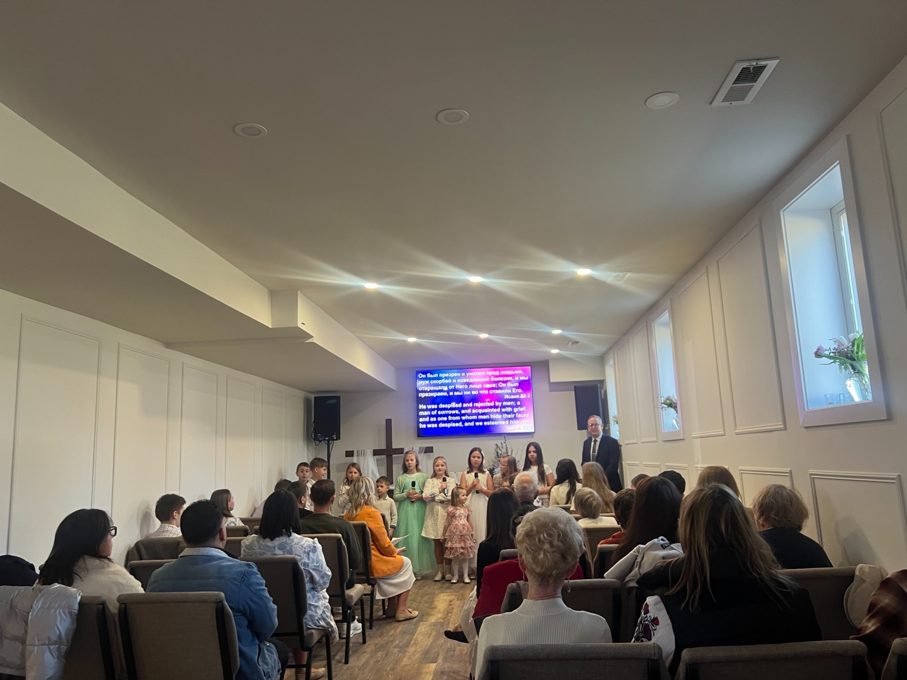
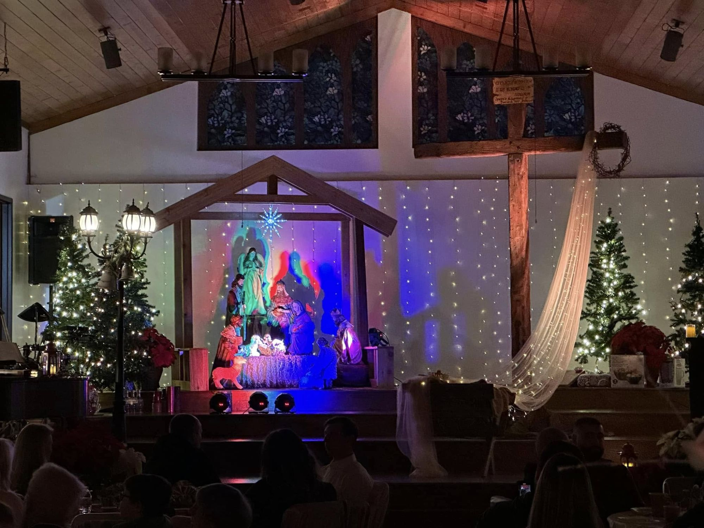
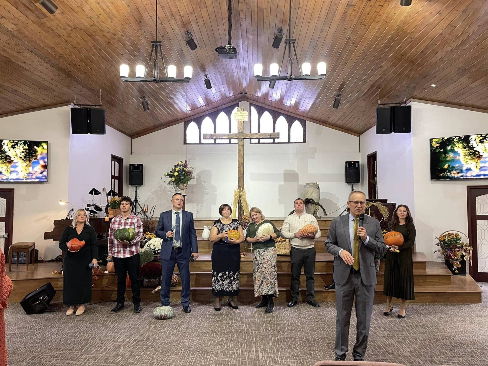
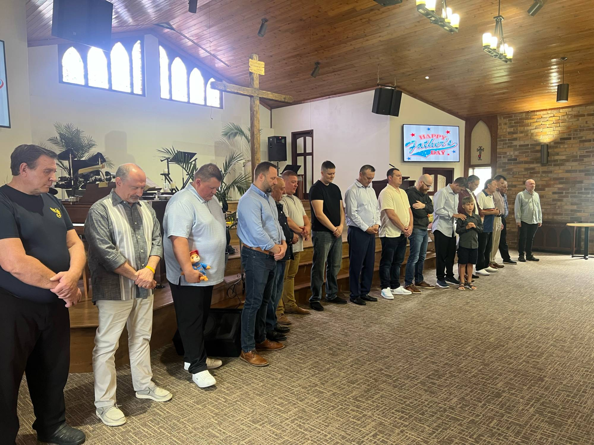
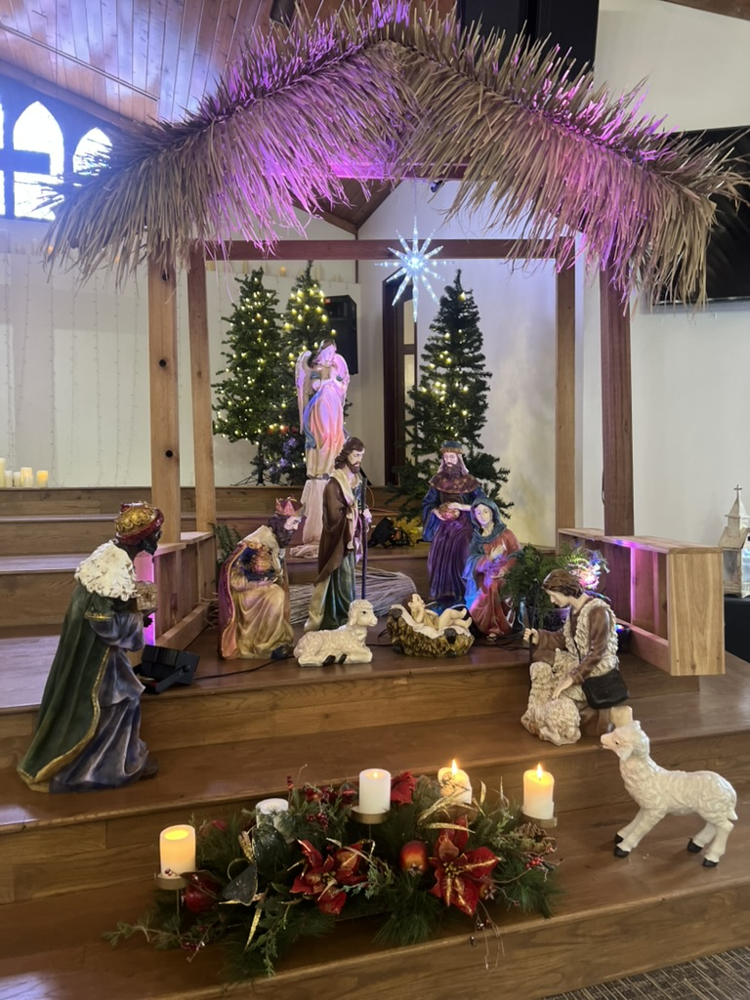
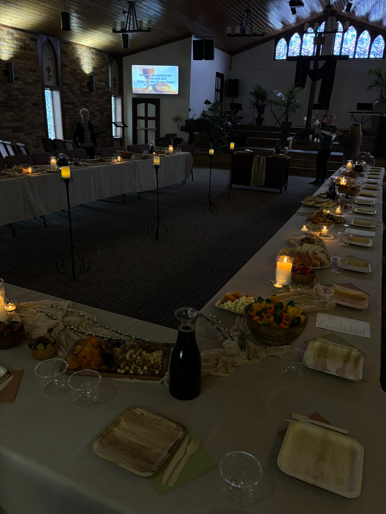
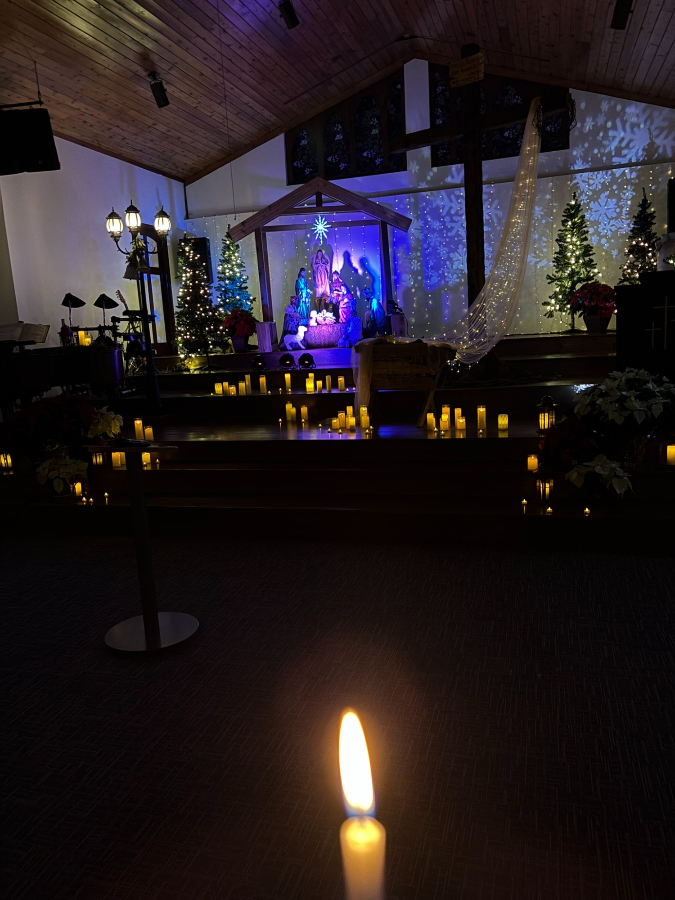
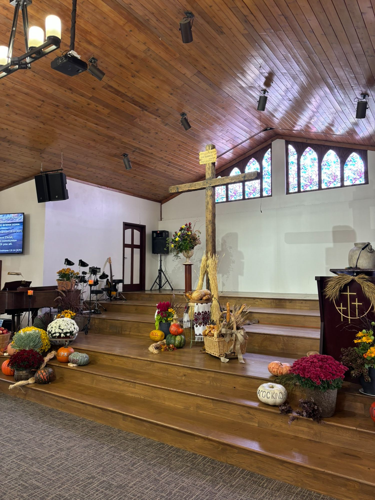

Centered around Christ.
A Russian and English speaking church in Eagan, Minnesota. Focused on Christ and fulfilling His purpose for us, His children.
"Come to me, all you who are weary and burdened, and I will give you rest."
We exist to glorify Christ — in worship, and in the everyday ordinary.
Grace Evangelical Church is a Russian and English-speaking congregation serving the Twin Cities since 1999. We are part of the Midwest Association of Slavic Churches.
Whether you're exploring faith for the first time, returning after years away, or searching for a church home, you are welcome here. We are a close family, and you'll find a people eager to walk with you toward Christ.
What we hold to be true.
Our beliefs are rooted in the historic Christian faith and shaped by scripture. Below is a brief summary — we'd love to talk through any of it with you.
Scripture
The Bible is the inspired, inerrant Word of God — our supreme authority for faith and life. We study it together, take it seriously, and trust it completely.
The Triune God
We believe in one God eternally existing in three persons — Father, Son, and Holy Spirit — perfect in holiness, love, and power.
Jesus Christ
Fully God and fully man, crucified for our sins, risen from the dead, ascended to the Father, and returning in glory. He is the only way to salvation.
Salvation by grace
We are saved by God's grace through faith in Jesus Christ alone — not by our works, heritage, or effort. This gift transforms everything.
The Holy Spirit
The Spirit dwells in every believer, convicts us of sin, comforts us in suffering, and empowers us to live and serve as followers of Christ.
The church
The church is the family of God — a people called out of the world to love one another, proclaim the gospel, and care for our neighbors until Christ returns.
Those who serve.
Our pastor and elders are here for you. Whether you have questions about faith, need prayer, or want to connect — reach out.
A few moments from our family.
A snapshot of our church in worship, in service, and in ordinary life together. The best way to see who we are is to come see us — but here's a glimpse.









Watch and listen.
| Date | Sermon | |
|---|---|---|
| Loading sermons… | ||
Showing the 5 most recent sermons. View the full archive on YouTube →
Find your place in the family.
There are many ways to connect, serve, and grow alongside others at Grace. Whatever your season of life, there is a place for you here.
Small groups
Sundays gather us as one family, but small groups are where that family takes root. Our groups meet in homes throughout the week — for prayer, Bible study, shared meals, and the ordinary friendships that make a church feel like home.
Want to join a group?
Send us a message and we'll connect you with a group that fits your season of life.
Get in touch →Sunday School
Bible teaching for children of all ages every Sunday, with dedicated teachers who love to see young hearts grow in faith.
Bible School
In-depth study of God's word for adults who want to go deeper — open to members and guests alike.
Choir and Kids Choir
Leading the congregation in worship through music. We welcome singers of all levels — no audition required, just a willing heart.
Coffee and fellowship
Coffee and conversation before and after service. Stay awhile — this is how friendships form and how newcomers become family.
The Bible calls us to serve.
We continuously aim to adopt the servitude mindset and use our Church to help others. We uphold ministries across the world, supporting persecuted Christians, orphans and those in need. Faith without works is dead.
Orphanage ministry in Nepal
Supporting orphanage ministry in Nepal — providing care, shelter, and the love of Christ to children who have no one else to turn to.
Churches in Turkmenistan
Standing with the persecuted church in Central Asia, where believers meet quietly and faithfully despite ongoing hardship.
Operation Christmas Child
A proud drop-off site for over 20 years. Each year our families pack shoeboxes with small gifts and the story of Jesus, sent by Samaritan's Purse to children in places hard to reach by any other means.
"Religion that is pure and undefiled before God the Father is this: to visit orphans and widows in their affliction, and to keep oneself unstained from the world." — James 1:27
Nothing outside His sovereign hand.
"And we know that for those who love God all things work together for good, for those who are called according to his purpose." — Romans 8:28
In December 2025, a fire caused significant damage to our church building. We do not believe it was chance. Our God is sovereign over every circumstance, and what seems like loss in our eyes, He is working for our good and for the glory of His name.
By His grace no one was harmed. By His grace we have continued to gather every Sunday in the active wing while construction progresses on the other. And by His grace we will rebuild — not to return to what was, but to honor Him in what comes next.
To God be the glory.
Share a prayer request.
"Do not be anxious about anything, but in everything by prayer and supplication with thanksgiving let your requests be made known to God." — Philippians 4:6
All requests are held in confidence.
We'd love to hear from you.
1985 Diffley Rd
Eagan, MN 55122
Sunday · 10:30 AM
Wednesday · 6:30 PM
Weeknights — small groups